Salient Object Detection
PhD Candidate: Xuebin Qin
Supervisor: Dr. Martin Jagersand
Department of Computing Science, University of Alberta, Edmonton, AB, Canada, T6G 2R3.
1. Overview
Human vision system has an effective mechanism for retrieving and localizing the most
important information from visual scenes.
In computer vision, Salient Object Detection (SOD) algorithms aim at simulating this mechanism
by extracting or segmenting these salient targets and elements from given images or video frames.
Such algorithms can be used in a wide range of applications such as image segmentation, image editing,
visual tracking, robot navigation and etc.
The exact definitions of "salient object" in different applications are different and they heavily rely on the objectives of the applications. While the objectives are mainly derived from the human expectations and knowledges. Therefore, the problem is how to build the connection between human knowledge and the final expected salient object detection results. There are mainly three ways of integrating human knowledge for SOD: 1) direct employing (see Fig. 1), 2) explicit encoding (see Fig. 2), 3) implicit encoding (see Fig. 3). Hence, following three categories of salient object detection methods are studied in this thesis.
1) Interactive Annotation by ByLabel: A Boundary based Semi-Automatic Image Annotation Tool.
Direct employing refers to the process of interactively annotating and labeling the targets from given images or videos.
We develop a novel general boundary based semi-automatic tool, ByLabel, for accurate image annotation.
Given an image, existing labeling tools require the human to accurately click on numerous boundary points.
ByLabel simplifies the niggling clicking operations in most of the existing label tools to sequentially selecting
the automatically generated boundary fragment proposals, which greatly reduces the workload and time costs.
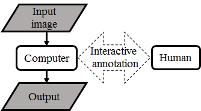
Fig. 1. Direct employing human knowledge by interactive annotation.
2) Unsupervised Salient Closed Boundary Extraction by Perceptual Grouping.
Explicit encoding refers to the way that analyzing and extracting relevant principles and handcrafted features explicitly to describe the objectives.
Different from ByLabel that relies on human intervention, salient closed boundary extraction aims to
automatically identify and connect a subset of detected fragments to form a closed boundary by explicitly encoding
the principles of Gestalt laws into the algorithms.
Particularly, we formulate this problem as a graph-based optimization problem and propose a novel optimization algorithm "Bi-Directional Shortest Path (BDSP)" for solving that.
In addition, we adapt our new method to different applications including individual building outline
extraction and salient closed boundary tracking.
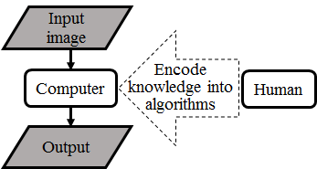
Fig. 2. Explicit encoding human knowledge into algorithms.
3) Supervised Salient Object Detection by Deep Convolutional Neural Networks.
Implicit encoding happens in the process of human annotation for the generation of training datasets.
Deep Convolutional Neural Networks (DCNN) are able to achieve more robust and accurate performance against
traditional methods thanks to their strong fitting capability and the large amount of manually labeled training data.
Instead of focusing on improving region accuracy, we propose a novel predict-refine architecture, BASNet, as well as a hybrid loss for
achieving high boundary quality results.
Experimental results show that our method outperforms the SOTA methods both in terms of regional and boundary evaluation measures.
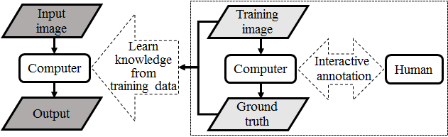
Fig. 3. Implicit encoding human knowledge into annotated data.
2. Proposed Methods
2.1. Interactive Annotation by ByLabel: A Boundary based Semi-Automatic Image Annotation Tool
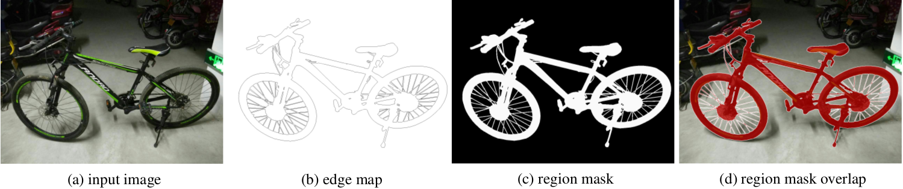
We develop a novel boundary based semiautomatic tool, ByLabel, for accurate image annotation. Given an image, ByLabel first detects its edge features and computes high quality boundary fragments. Current labeling tools require the human to accurately click on numerous boundary points. ByLabel simplifies this to just selecting among the boundary fragment proposals that ByLabel automatically generates. To evaluate the performance of ByLabel, 10 volunteers, with no experiences of annotation, labeled both synthetic and real images. Compared to the commonly used tool LabelMe, ByLabel reduces image-clicks and time by 73% and 56% respectively, while improving the accuracy by 73% (from 1.1 pixel average boundary error to 0.3 pixel). The results show that our ByLabel outperforms the state-of-the-art annotation tool in terms of efficiency, accuracy and user experience. The tool is publicly available: http://webdocs.cs.ualberta.ca/~vis/ bylabel/.
2.2. Unsupervised Salient Closed Boundary Extraction by Perceptual Grouping
The problem of salient closed boundary extraction here is solved by fragments based perceptual grouping. The fragments based perceptual grouping refers to the process of identifying and connecting a subset of extracted edge fragments or line segments from the given images into a salient boundary. The idea of perceptual grouping is originally derived from psychology based on the observation that humans naturally perceive objects as organized patterns and objects. The perceptual grouping methods are usually based on a set of principles named as Gestalt Laws. The Gestalt laws mainly consist of six aspects including proximity, closure, continuity, similarity, common fate and good form. The Gestalt laws correspond to enforcing specified properties of a boundary. The Gestalt laws enforce the to be grouped boundary to have specifical properties. For example, proximity enforces to group the neighboring fragments with small gap length. Closure requires the target boundary to be a cycle, Continuity corresponds to the regulation on the smoothness of the target boundary.
Contributions
(1) We develop a flexible graph-based optimization algorithm "Bi-Directional Shortest Path (BDSP)" for solving the problem of searching for a special cycle from an undirected group. We further adapt the algorithm for different applications.
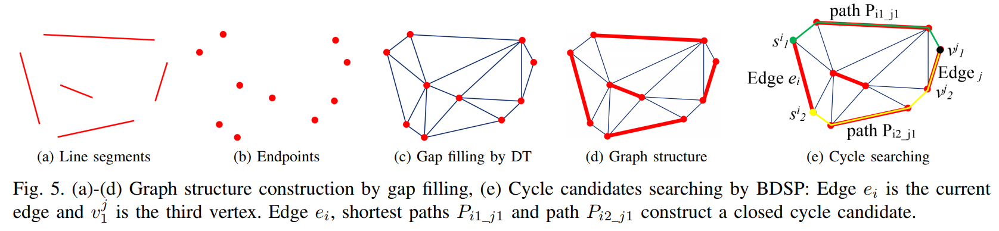 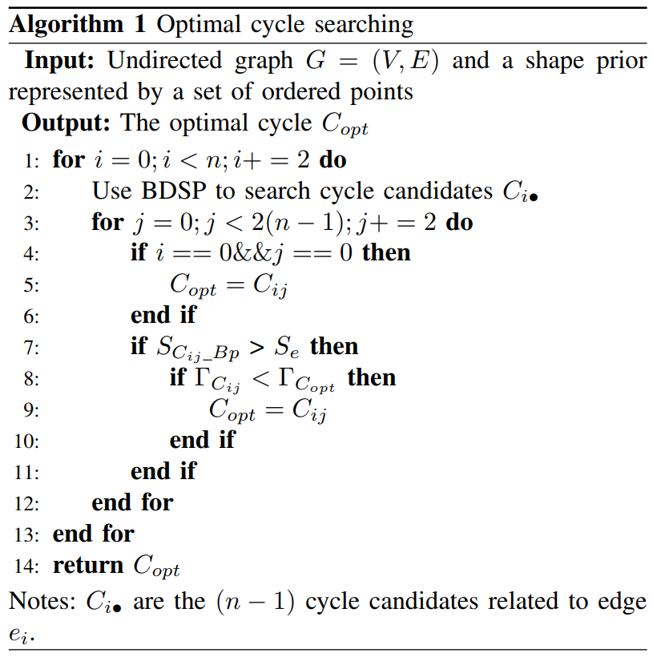
(2) We define a novel saliency cost function which combines the proximity and continuity principle of Gestalt Laws for individual building outline extraction from high resolution aerial images. Combined with our graph-based optimization algorithm, our method is able to extract individual building outlines with different shapes and achieves state-of-the-art performance against those unsupervised saliency detection methods.
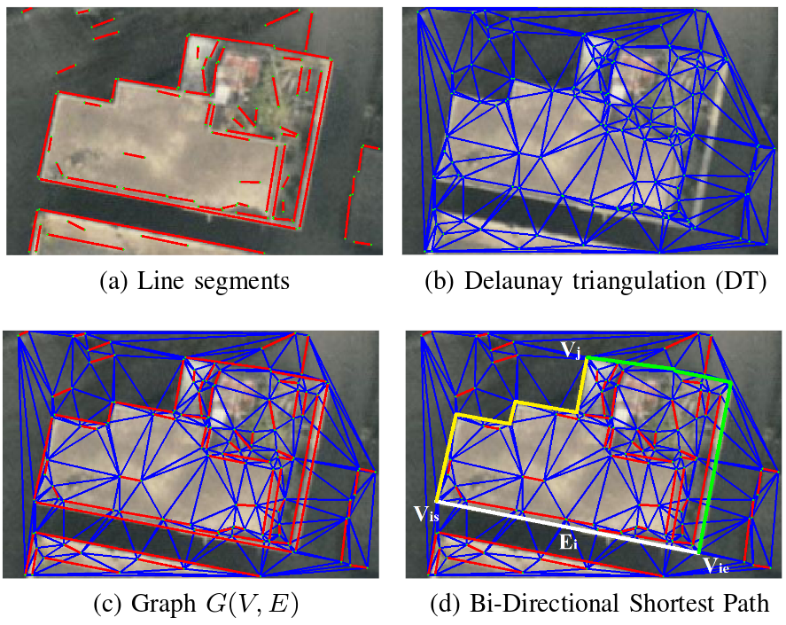

(3) We adapt our BDSP for salient closed boundary tracking by line segments perceptual grouping. Particularly, we encode the area change constraint into the objective saliency function and solve that by our graph-based optimization method BDSP. To validate the performance, we build a salient closed boundary tracking dataset. The experimental results show that our method is able to effectively handle those extremal cases, where stable and enough regional texture information is unavailable. Our method runs at real-time. In addition, we adapt our method to a real robot pouring task, which further demonstrates the reliable performance of our method.
(4) Since one pixel-width edge fragments are more accurate than line segments in describing smooth curves, we develop a novel method for edge fragments generation including a edge breaking and a fragments filtering method. Then, we replace the line segments used in the salient closed boundary tracking method described above with our newly detected high quality edge fragments.
That greatly improves the tracking accuracy while keep the real-time speed.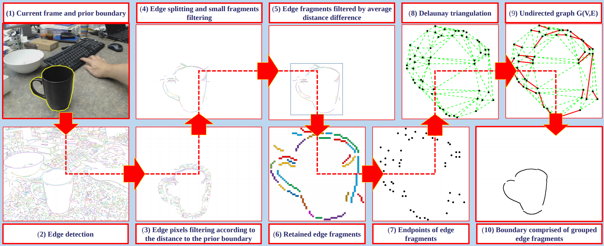
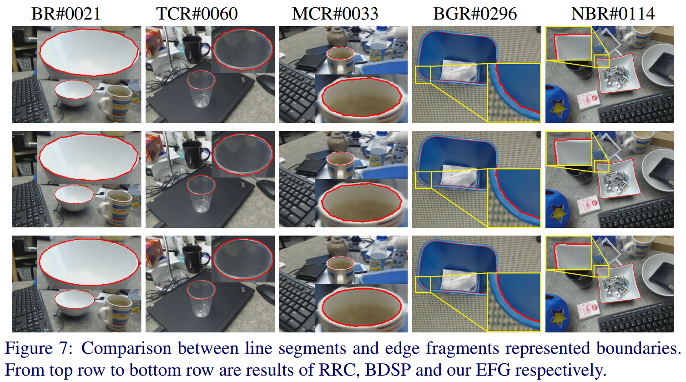
2.3. Supervised Salient Object Detection by Deep Convolutional Neural Networks.
Most of the previous works however focus on region accuracy but not on the boundary quality. In this paper, we propose a predict-refine architecture, BASNet, and a new hybrid loss for Boundary-Aware Salient object detection. Specifically, the architecture is composed of a densely supervised Encoder-Decoder network and a residual refinement module, which are respectively in charge of saliency prediction and saliency map refinement. The hybrid loss guides the network to learn the transformation between the input image and the ground truth in a three-level hierarchy – pixel-, patch- and map- level – by fusing Binary Cross Entropy (BCE), Structural SIMilarity (SSIM) and Intersectionover-Union (IoU) losses. Equipped with the hybrid loss, the proposed predict-refine architecture is able to effectively segment the salient object regions and accurately predict the fine structures with clear boundaries. Experimental results on six public datasets show that our method outperforms the state-of-the-art methods both in terms of regional and boundary evaluation measures. Our method runs at over 25 fps on a single GPU. The code is available at: https://github.com/NathanUA/BASNet.
Contributions
(1) A novel boundary-aware salient object detection network: BASNet, which consists of a deeply supervised encoder-decoder and a residual refinement module.
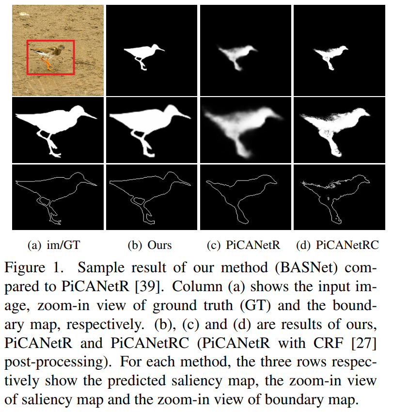
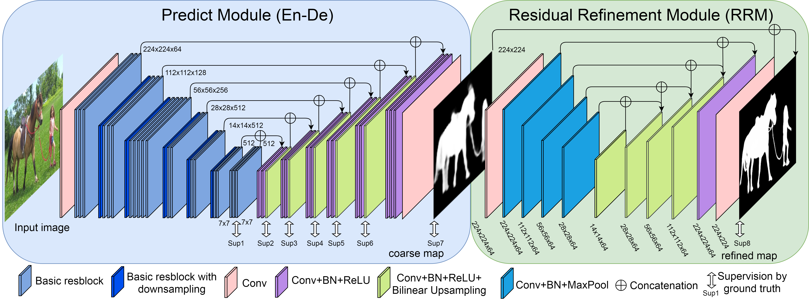
(2) A novel hybrid loss that fuses BCE, SSIM and IoU to supervise the training process of accurate salient object prediction on three levels: pixel-level, patch-level and map-level.
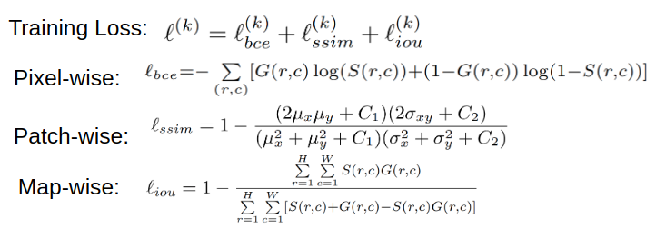
(3) A thorough evaluation of the proposed method that includes comparison with state-of-the-art methods on six widely used public datasets. Our method achieves state-of-the-art results in terms of both regional and boundary evaluation measures.
1) Quantitative Comparison

2) Qualitative Comparison

3. Published Papers
(My thesis is based on [1][3][4][5][7].)
[1]. Xuebin Qin, Zichen Zhang, Chenyang Huang, Chao Gao, Masood Dehghan and Martin Jagersand."BASNet: Boundary Aware Salient Object Detection".
The IEEE Conference on Computer Vision and Pattern Recognition (CVPR), 2019.
[pdf][code]
[2]. Xuebin Qin, Shida He, Zichen Zhang, Masood Dehghan, Jun Jin and Martin Jagersand. "Real-Time Edge Template Tracking via Homography Estimation"
The IEEE/RSJ International Conference on Intelligent Robots and Systems (IROS), October 2018.
[pdf][code][data][video]
[3]. Xuebin Qin, Shida He, Zichen Zhang, Masood Dehghan and Martin Jagersand. "ByLabel: A Boundary based Semi-Automatic Image Annotation Tool"
IEEE Winter Conf. on Applications of Computer Vision (WACV), March 2018.
[pdf][code][video][project page]
[4]. Xuebin Qin, Shida He, Zichen Zhang, Masood Dehghan and Martin Jagersand. "Real-time salient closed boundary tracking using perceptual grouping and shape priors."
The 28th British Machine Vision Conference, London, UK, September 2017. (BMVC Spotlight Poster)
[pdf][code][data][video][poster]
[5]. Xuebin Qin, Shida He, Camilo Perez Quintero, Abhineet Singh, Masood Dehghan and Martin Jagersand. "Real-time salient
closed boundary tracking via line segments perceptual grouping." 2017 IEEE/RSJ International Conference on Intelligent Robots and Systems (IROS), pp. 4284--4289, Vancouver, BC, Canada, September 24–28, 2017.
[pdf][code][data][vido]
[6]. Shida He, Xuebin Qin, Zichen Zhang and Martin Jagersand, Incremental 3D Line Segment Extraction from Semi-dense SLAM, accepted at International Conference on Pattern Recognition (ICPR), August 2018.
[project page]
[7]. Xuebin Qin, Shida He, Xiucheng Yang, Masood Dehghan, Qiming Qin and Martin Jagersand. "Accurate Outline Extraction of Individual Building from High Resolution Aerial Images"
Accepted in IEEE Geoscience and Remote Sensing Letters (GRSL), 2018.
[project page]
[8]. Xuebin Qin, Martin Jagersand, Xiucheng Yang, and Jun Wang. "Building facade recognition from aerial images using Delaunay Triangulation induced feature perceptual grouping."
In Pattern Recognition (ICPR), 2016 23rd International Conference on, pp. 3368-3373. IEEE, 2016.
[pdf][code]